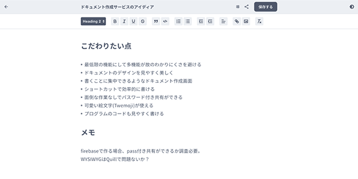
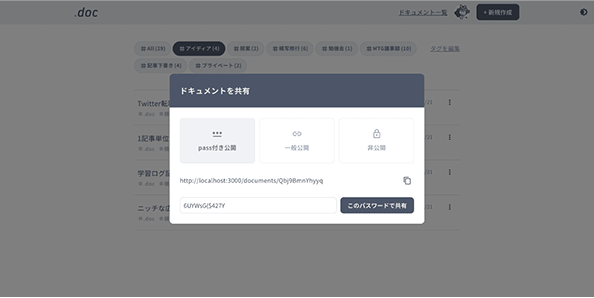
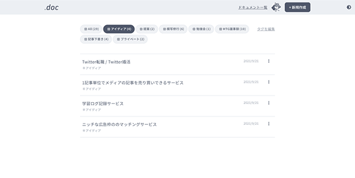

さくっと、パス付き資料
の作成＆共有
- ストレスなくサクサク書ける
- ドキュメントはパス付きで共有可能
- ベータ版の期間は完全無料
快適さへのこだわり
シンプルな機能
多機能でない分、わかりやすく・使いやすい機能。書くこと、共有することにのみ特化。
綺麗なドキュメント
見やすいドキュメント、見やすい管理画面。シンプルでわかりやすいデザイン。
書きやすいエディタ
ドキュメント作成画面の装飾はショートカットを用意。慣れればサクサク。
.docの機能

ドキュメント作成
装飾はボタンをワンクリック、もしくはショートカットキーで、綺麗に作成可能。

webページとして共有可能
パスワード付き共有 / 一般公開(URLを知っていれば閲覧可)/ 非公開の3つを用意。

タグでドキュメントを管理
ドキュメントはタグ付けすることで、分類が可能。もちろん追加削除 / 複数指定も可能。